5 Package
Les packages de R permettent d’étendre les fonctionnalités du logiciel par du code fourni par la communauté des développeurs. Ils sont la clé du succès de R parce qu’ils permettent de diffuser rapidement de nouvelles méthodes issues de la recherche ou d’ajouter de nouveaux outils qui peuvent devenir des standards, comme le tidyverse.
Il est utile de produire un package quand on a écrit des nouvelles fonctions qui forment un ensemble cohérent. Un package à usage personnel ou limité à une équipe de travail est simple à mettre en place et le temps gagné en utilisant facilement la version à jour de chaque fonction amortit très rapidement le temps consacré à la fabrication du package. Ce type de package a vocation à être hébergé sur GitHub.
Des packages à usage plus large, qui fournissent par exemple le code correspondant à une méthode publiée, sont placés dans le dépôt CRAN, d’où ils pourront être installés par la commande standard install.packages().
CRAN effectue des vérifications poussées du code et n’accepte que les packages passant sans aucun avertissement sa batterie de tests.
Ils doivent respecter la politique91 du dépôt.
La documentation pour la création de packages est abondante. L’ouvrage de référence est celui de Wickham (2015), à consulter en tant que référence.
L’approche utilisée ici consiste à créer un premier package très rapidement pour comprendre que la démarche est assez simple. Il sera ensuite enrichi des éléments nécessaires à un package diffusé à d’autres utilisateurs que son concepteur: une documentation complète et des tests de bon fonctionnement notamment.
5.1 Premier package
Cette introduction reprend les recommandations du blog Créer un package en quelques minutes92 de ThinkR.
5.1.1 Création
Les packages ont une organisation stricte dans une structure de fichiers et de répertoires figée. Il est possible de créer cette structure manuellement mais des packages spécialisés peuvent s’en charger:
- usethis automatise la création des dossiers;
- roxygen2 permet d’automatiser la documentation obligatoire des packages;
- devtools est la boîte à outils du développeur, permettant notamment de construire et tester les packages;
Les trois sont à installer en premier lieu:
install.packages(c("usethis", "roxygen2", "devtools"))Le package à créer sera un projet RStudio.
Dans le menu des projets, sélectionner “New Project > New Directory > R package using devtools…”, choisir le nom du projet et son dossier parent.
Le package s’appellera multiple, dans le dossier %LOCALAPPDATA%\ProjetsR en suivant les recommandations de la section 1.2.4.
Le nom du package doit respecter les contraintes des noms de projets: pas de caractères spéciaux, pas d’espaces… Il doit aussi être évocateur de l’objet du package. Si le package doit être diffusé, toute sa documentation sera rédigée en Anglais, y compris son nom.
La structure minimale est crée:
- un fichier
DESCRIPTIONqui indique que le dossier contient un package et précise au minimum son nom; - un fichier
NAMESPACEqui déclare comment le package intervient dans la gestion des noms des objets de R (son contenu sera mis à jour par roxygen2); - un dossier
Rqui contient le code des fonctions offertes par le package (vide à ce stade).
Le package peut être testé tout de suite: dans la fenêtre Build de RStudio, cliquer sur “Install and Restart” construit le package et le charge dans R, après avoir redémarré le programme pour éviter tout conflit.
Dans la fenêtre Packages, multiple est maintenant visible. Il est chargé, mais ne contient rien.
5.1.2 Première fonction
5.1.2.1 Fichiers
Les fonctions sont placées dans un ou plusieurs fichier .R dans le dossier R.
L’organisation de ces fichiers est libre.
Pour cet exemple, un fichier du nom de chaque fonction sera créé.
Des fichiers regroupant les fonctions similaires ou un seul fichier contenant tout le code sont des choix possibles.
Le choix fait ici est le suivant:
- un fichier qui contiendra le code commun à tout le package:
package.R; - un fichier commun à toutes les fonctions:
fonctions.R.
5.1.2.2 Création
La première fonction, double(), est créée et enregistrée dans le fichier fonctions.R:
double <- function(number) {
return(2 * number)
}A ce stade, la fonction est interne au package et n’est pas accessible depuis l’environnement de travail. Pour s’en persuader, construire le package (Install and Restart) et vérifier le bon fonctionnement de la fonction:
double(2)Le résultat est un vecteur composé de deux 0 parce que la fonction appelée est un homonyme du package base (voir sa documentation en tapant ?double):
base::double(2)## [1] 0 0Pour que la fonction de notre package soit visible, elle doit être exportée en la déclarant dans le fichier NAMESPACE.
C’est le travail de roxygen2 qui gère en même temps la documentation de chaque fonction.
Pour l’activer, placer le curseur dans la fonction et appeler le menu “Code > Insert Roxygen Skeleton”.
Des commentaires sont ajoutés avant la fonction:
#' Title
#'
#' @param number
#'
#' @return
#' @export
#'
#' @examples
double <- function(number) {
return(2 * number)
}Les commentaires à destination de roxygen2 commencent par #':
- la première ligne contient le titre de la fonction, c’est-à-dire un descriptif très court: son nom en général;
- la ligne suivante (séparée par un saut de ligne) peut contenir sa description (rubrique Description dans l’aide);
- la suivante (après un autre saut de ligne) peut contenir plus d’informations (rubrique Details dans l’aide);
- les arguments de la fonction sont décrits par les lignes
@param; @returndécrit le résultat de la fonction;@exportdéclare que la fonction est exportée: elle sera donc utilisable dans l’environnement de travail;- des exemples peuvent être ajoutés.
La documentation doit être complétée:
#' double
#'
#' Double value of numbers.
#'
#' Calculate the double values of numbers.
#'
#' @param number a numeric vector.
#'
#' @return A vector of the same length as `number` containing the
#' transformed values.
#' @export
#'
#' @examples
#' double(2)
#' double(1:4)
double <- function(number) {
return(2 * number)
}Ne pas hésiter à s’inspirer de l’aide de fonctions existantes pour respecter les standards de R (ici: ?log):
- penser que les fonctions sont normalement vectorielles:
numberest par défaut un vecteur, pas un scalaire; - certains éléments commencent par une majuscule et se terminent par un point parce que ce sont des paragraphes dans le fichier d’aide;
- le titre n’a pas de point final;
- la description des paramètres ne commence pas par une majuscule.
La prise en compte des changements dans la documentation nécessitent d’appeler la fonction roxygenize().
Dans la fenêtre Build, le menu “More > Document” permet de le faire.
Ensuite, construire le package (Install and Restart) et vérifier le résultat en exécutant la fonction et en affichant son aide:
double(2)
`?`(double)Il est possible d’automatiser la mise à jour de la documentation à chaque construction du package par le menu “Build > Configure Build Tools…”: cliquer sur “Configure” et cocher la case “Automatically reoxygenize when running Install and Restart”. C’est un choix efficace pour un petit package mais pénalisant quand le temps de mise à jour de la documentation s’allonge avec la complexité du package. La reconstruction du package est le plus souvent utilisée pour tester des modifications du code: sa rapidité est essentielle.
La documentation pour roxygen2 supporte le format Markdown93.
A ce stade, le package est fonctionnel: il contient une fonction et un début de documentation.
Il est temps de lancer une vérification de son code: dans la fenêtre Build, cliquer sur “Check” ou utiliser la commande devtools::check().
L’opération réoxygène le package (met à jour sa documentation), effectue un grand nombre de tests et renvoie la liste des erreurs, avertissements et notes détectées.
L’objectif est toujours de n’avoir aucune alerte: elles doivent être traitées immédiatement.
Par exemple, le retour suivant est un avertissement sur la non-conformité de la licence déclarée:
> checking DESCRIPTION meta-information ... WARNING
Non-standard license specification:
`use_gpl3_license()`
Standardizable: FALSE
0 errors v | 1 warning x | 0 notes v
Erreur : R CMD check found WARNINGsPour la corriger, mettre à jour, exécuter la commande de mise à jour de la licence, en commençant par votre nom:
options(usethis.full_name = "Eric Marcon")
usethis::use_gpl3_license()La liste des licences valides est fournie par R94.
Après correction, relancer les tests jusqu’à la disparition des alertes.
5.1.3 Contrôle de source
Il est temps de placer le code sous contrôle de source.
Activer le contrôle de source dans les options du projet (figure 3.2). Redémarrer RStudio à la demande.
Créer un dépôt sur GitHub et y pousser le dépôt local, comme expliqué dans le chapitre 3.
Créer le fichier README.md:
# multiple
An R package to compute mutiple of numbers.Le développement du package est ponctué par de nombreux commits à chaque modification et une publication (push) à chaque étape, validée par une incrémentation du numéro de version.
5.1.4 package.R
Le fichier package.R est destiné à recevoir le code R et surtout les commentaires pour roxygen2 qui concernent l’ensemble du package.
Le premier bloc de commentaire produira l’aide du package (?multiple).
#' multiple-package
#'
#' Multiples of numbers
#'
#' This package allows simple computation of multiples
#' of numbers, including fast algorithms for integers.
#'
#' @name multiple
#' @docType package
NULLSon organisation est identique à celle des documentations de fonctions, avec deux déclarations particulières pour le nom du package et le type de documentation.
Le code NULL après les commentaires indique à roxygen2 qu’il n’y a pas de code R lié.
La documentation est mise à jour par la commande roxygen2::roxygenise().
Après reconstruction du package, vérifier que l’aide est est apparue: ?multiple.
5.2 Organisation du package
5.2.1 Fichier DESCRIPTION
Le fichier doit être complété:
Package: multiple
Title: Calculate multiples of numbers
Version: 0.0.0.9000
Authors@R:
person(given = "Eric",
family = "Marcon",
role = c("aut", "cre"),
email = "e.marcon@free.fr",
comment = c(ORCID = "0000-0002-5249-321X"))
Description: This package allows simple computation
of multiples of numbers, including fast algorithms
for integers.
License: GPL-3
Encoding: UTF-8
LazyData: true
Roxygen: list(markdown = TRUE)
RoxygenNote: 7.1.1Le nom du package est figé et ne doit pas être modifié.
Son titre doit décrire en une ligne à quoi il sert. Le titre est affiché dans la fenêtre Packages à côté des noms des packages.
La version doit respecter les conventions:
- Le premier nombre est la version majeure, 0 tant que le package n’est pas stable puis 1. La version majeure ne change que si le package n’est plus compatible avec ses versions précédentes, ce qui oblige les utilisateurs à modifier leur code.
- Le deuxième est la version mineure, incrémentée quand des fonctionnalités nouvelles sont ajoutées.
- Le troisième est la version de correction: 0 à l’origine, incrémentée à chaque correction de code sans nouvelle fonctionnalité.
- Le quatrième est réservé au développement, et commence à 9000. Il est incrémenté à chaque version instable et disparaît quand une nouvelle version stable (release) est produite.
Exemple: une correction de bug sur la version 1.3.0 produit la version 1.3.1. Les versions de développement suivantes (instables, non destinées à l’usage en production) sont 1.3.1.9000 puis 1.3.1.9001, etc. Le numéro de version doit être mis à jour à chaque fois que le package est poussé sur GitHub. Quand le développement est stabilisé, la nouvelle version, destinée à être utilisée en production, est 1.3.2 si elle n’apporte pas de nouvelle fonctionnalité ou 1.4.0 dans le cas contraire.
La description des auteurs est assez lourde mais simple à comprendre.
Les identifiants Orcid des auteurs académiques peuvent être utilisés.
Si le package a plusieurs auteurs, ils sont placés dans une fonction c(): c(person(...), person()) pour deux auteurs.
Dans ce cas, il faut préciser le rôle de chacun :
- “cre” pour le créateur du package
- “aut” pour un auteur parmi les autres
- “ctb” pour un contributeur, qui peut avoir signalé un bug ou fourni un peu de code.
La description du package en un paragraphe permet de donner plus d’informations.
La licence précise la façon dont le package peut être utilisé et modifié. GPL-3 est une bonne valeur par défaut, mais d’autres choix sont possibles95.
L’option LazyData signifie que les données d’exemples fournies avec le package peuvent être utilisées sans les appeler au préalable par la fonction data(): c’est le standard actuel.
Enfin, les deux dernières lignes sont gérées par roxygen2.
5.2.2 Fichier NEWS.md
Le fichier NEWS.md contient l’historique du package.
Les nouvelles versions sont ajoutées en haut du fichier.
Créer une première version du fichier:
# multiple 0.0.0.9000
## New features
* Initial version of the packageLes titres de premier niveau doivent contenir le nom du package et sa version. Les titres de niveau 2 sont libres, mais contiennent en général des rubriques comme “New features” et “Bug Fixes”.
Pour ne pas multiplier les versions décrites, il est conseillé de modifier la version en cours et de compléter la documentation jusqu’au changement de version de correction (troisième nombre). Ensuite, l’entrée correspondant à cette version reste figée et une nouvelle entrée est ajoutée.
5.3 Vignette
Une vignette est indispensable pour documenter correctement le package:
usethis::use_vignette("multiple")Le fichier multiple.Rmd est créé dans le dossier vignettes.
Ajouter un sous-titre dans son entête: la description courte du package:
title: "multiple"
subtitle: "Multiples of numbers"Le reste de l’entête permet à R de construire la vignette à partir de code R Markdown.
Le corps de la vignette contient par défaut du code R pour déclarer les options de présentation des bouts de code et le chargement du package. Une introduction à l’utilisation du package doit être écrite dans ce document, en R Markdown.
Pendant le développement du package, la vignette peut être construite manuellement en exécutant:
devtools::build_vignettes("multiple")Les fichiers produits sont placés dans doc/: ouvrir le fichier .html pour contrôler le résultat.
RStudio ne crée pas la vignette du package quand la commande “Install and Restart” de la fenêtre Build est appelée. Pour une installation complète, deux solutions sont possibles:
- Construire le fichier source du package (“Build > More > Build Source Package”) puis l’installer (“Packages > Install > Install from > Package Archive file”). Le fichier source se trouve à côté de celui du projet.
- Pousser le code du package sur GitHub puis exécuter:
remotes::install_github("multiple", build_vignettes = TRUE)La vignette peut ensuite être affichée par la commande:
vignette("multiple")5.4 pkgdown
Le package pkgdown permet de créer un site d’accompagnement du package96, qui reprend le fichier README.md comme page d’accueil, la vignette dans une rubrique “Get Started”, l’ensemble des fichiers d’aide avec leurs exemples exécutés (section “Reference”), le fichier NEWS.md pour un historique du package (section “Changelog”) et des informations du fichier DESCRIPTION.
Créer le site avec usethis
usethis::use_pkgdown()Construire ensuite le site. Cette commande sera exécutée à nouveau à chaque changement de version du package:
pkgdown::build_site()Le site est placé dans le dossier docs.
Ouvrir le fichier index.htm avec un navigateur web pour le visualiser.
Dès que le projet sera poussé sur GitHub, activer les pages du dépôt pour que le site soit visible en ligne (voir section 3.7).
pkgdown place le site dans le dossier docs.
Ajouter l’adresse des pages GitHub dans une nouvelle ligne du fichier DESCRIPTION:
URL: https://GitHubID.github.io/multipleL’ajouter aussi dans le fichier _pkgdown.yml qui a été créé vide, ainsi que l’option suivante:
url: https://GitHubID.github.io/multiple
development:
mode: autopkgdown place le site dans le dossier docs/dev si le site d’une version stable (à trois nombres) du package existe dans docs et que la version en cours est une version de développement (à quatre nombres).
De cette façon, les utilisateurs d’une version de production du package ont accès au site sans qu’il soit perturbé par les versions de développement.
Le site peut être enrichi de plusieurs façons:
- En ajoutant des articles au format R Markdown dans le dossier
vignettes/articles. La vignette ne peut pas mobiliser d’importantes ressources de calcul pour présenter des exemples parce qu’elle est construite en même temps que le package. Les articles sont générés par pkgdown, indépendamment, et peuvent donc être plus ambitieux; - En améliorant sa présentation (regroupement des fonctions par thèmes, ajout de badges, d’un sticker97…): se référer à la vignette de pkgdown.
Pour enrichir la documentation du package, il est possible d’utiliser un fichier README.Rmd au format R Markdown, à tricoter pour créer le README.md standard de GitHub, utilisé comme page d’accueil du site pkgdown, qui peut de cette façon présenter des exemples d’utilisation du code.
La démarche est détaillée dans R Packages98.
La complexité ajoutée est à comparer au gain obtenu: une page d’accueil simple (sans code) avec des liens vers la vignette et les articles est plus simple à mettre en œuvre.
5.5 Code spécifique aux packages
5.5.1 Importation de fonctions
Créons une nouvelle fonction dans fonctions.R qui ajoute un bruit aléatoire à la valeur double:
fuzzydouble <- function(number, sd = 1) {
return(2 * number + rnorm(length(number), 0, sd))
}Le bruit est tiré dans une loi normale centrée d’écart-type sd et ajouté à la valeur calculée.
rnorm() est une fonction du package stats.
Même si le package est systématiquement chargé par R, le package d’appartenance de la fonction doit obligatoirement être déclaré: les seules exceptions sont les fonctions du package base.
Le package stats doit d’abord être déclaré dans DESCRIPTION qui contient une instruction Imports:.
Tous les packages utilisés par le code de multiple seront listés, séparés par des virgules.
Imports: statsCette “importation” signifie simplement que le package stats doit être chargé, mais pas nécessairement attaché (voir section 2.2), pour que multiple fonctionne.
Ensuite, la fonction rnorm() doit être trouvable dans l’environnement du package multiple.
Il y a plusieurs façons de remplir cette obligation.
D’abord, le commentaire suivant pourrait être fourni pour roxygen2:
#' @import statsTout l’espace de nom du package stats serait attaché et accessible au package multiple.
Ce n’est pas une bonne pratique parce qu’elle multiplie les risques de conflits de noms (voir section 2.2).
Notons que la notion d’importation utilisée ici est différente de celle de DESCRIPTION, bien qu’elles aient le même nom.
Il est préférable d’importer uniquement la fonction rnorm() en la déclarant dans la documentation de la fonction:
#' @importFrom stats rnormCe n’est pas une pratique idéale non plus parce que l’origine de la fonction n’apparaîtrait pas clairement dans le code du package.
La bonne pratique est de ne rien importer (au sens de roxygen2) et de qualifier systématiquement les fonctions d’autres packages avec la syntaxe package::fonction().
C’est la solution retenue ici parce que la directive @importFrom importerait la fonction dans tout le package multiple, pas seulement dans la fonction fuzzydouble(), au risque de créer des effets de bord (modifier le comportement d’une autre fonction du package qui n’assumerait pas l’importation de rnorm()).
Finalement, le code de la fonction est le suivant:
#' fuzzydouble
#'
#' Double value of numbers with an error
#'
#' Calculate the double values of numbers
#' and add a random error to the result.
#'
#' @param number a numeric vector.
#' @param sd the standard deviation of the Gaussian error added.
#'
#' @return A vector of the same length as `number`
#' containing the transformed values.
#' @export
#'
#' @examples
#' fuzzydouble(2)
#' fuzzydouble(1:4)
fuzzydouble <- function(number, sd = 1) {
return(2 * number + stats::rnorm(length(number), 0, sd))
}5.5.2 Méthodes S3
Les méthodes S3 sont présentées en section 2.1.2.
5.5.2.1 Classes
Les objets appartiennent à des classes:
# Classe d'un nombre
class(2)## [1] "numeric"# Classe d'une fonction
class(sum)## [1] "function"En plus des classes de base, les développeurs peuvent en créer d’autres.
5.5.2.2 Méthodes
L’intérêt de créer de nouvelles classes est de leur adapter des méthodes existantes, le cas le plus courant étant plot().
Il s’agit d’une méthode générique, c’est-à-dire un modèle de fonction, sans code, à décliner selon la classe d’objet à traiter.
plot## function (x, y, ...)
## UseMethod("plot")
## <bytecode: 0x7fd5fa318800>
## <environment: namespace:base>Il existe dans R de nombreuses déclinaisons de plot qui sont des fonctions dont le nom est de la forme plot.class().
stats fournit une fonction plot.lm() pour créer une figure à partir d’un modèle linéaire.
De nombreux packages créent des classes adaptées à leurs objets et proposent une méthode plot pour chaque classe.
Les fonctions peuvent être listées:
# Quelques fonctions plot()
head(methods(plot))## [1] "plot,ANY-method" "plot,color-method"
## [3] "plot.AccumCurve" "plot.acf"
## [5] "plot.ACF" "plot.addvar"# Nombre total
length(methods(plot))## [1] 150Inversement, les méthodes disponibles pour une classe peuvent être affichées:
methods(class = "lm")## [1] add1 alias anova
## [4] as_flextable case.names coerce
## [7] confint cooks.distance deviance
## [10] dfbeta dfbetas drop1
## [13] dummy.coef effects extractAIC
## [16] family formula fortify
## [19] hatvalues influence initialize
## [22] kappa labels logLik
## [25] model.frame model.matrix nobs
## [28] plot predict print
## [31] proj qqnorm qr
## [34] residuals response rstandard
## [37] rstudent show simulate
## [40] slotsFromS3 summary variable.names
## [43] vcov
## see '?methods' for accessing help and source codeLa méthode print est utilisée pour afficher tout objet (elle est implicite quand on saisit seulement le nom d’un objet):
my_lm <- lm(dist ~ speed, data = cars)
# Equivalent de '> my_lm'
print(my_lm)##
## Call:
## lm(formula = dist ~ speed, data = cars)
##
## Coefficients:
## (Intercept) speed
## -17.579 3.932La méthode summary affiche un résumé lisible de l’objet:
summary(my_lm)##
## Call:
## lm(formula = dist ~ speed, data = cars)
##
## Residuals:
## Min 1Q Median 3Q Max
## -29.069 -9.525 -2.272 9.215 43.201
##
## Coefficients:
## Estimate Std. Error t value Pr(>|t|)
## (Intercept) -17.5791 6.7584 -2.601 0.0123 *
## speed 3.9324 0.4155 9.464 1.49e-12 ***
## ---
## Signif. codes:
## 0 '***' 0.001 '**' 0.01 '*' 0.05 '.' 0.1 ' ' 1
##
## Residual standard error: 15.38 on 48 degrees of freedom
## Multiple R-squared: 0.6511, Adjusted R-squared: 0.6438
## F-statistic: 89.57 on 1 and 48 DF, p-value: 1.49e-12Les autres méthodes ont été créées spécifiquement pour les besoins du package stats.
5.5.2.3 Attribution d’un objet à une classe
Pour qu’un objet appartient à une classe, il suffit de le déclarer:
x <- 1
class(x) <- "MyClass"
class(x)## [1] "MyClass"Une façon plus élégante de le faire est d’ajouter la nouvelle classe à l’ensemble des classes auquel l’objet appartient déjà:
y <- 1
class(y) <- c("MyClass", class(y))
class(y)## [1] "MyClass" "numeric"Il n’y a aucune vérification de cohérence entre la structure réelle de l’objet et une structure de la classe qui serait déclarée ailleurs: le développeur doit s’assurer que les méthodes trouveront bien les bonnes données dans les objets qui déclarent lui appartenir. Dans le cas contraire, des erreurs se produisent:
class(y) <- "lm"
tryCatch(print(y), error = function(e) print(e))## <simpleError: $ operator is invalid for atomic vectors>5.5.3 En pratique
5.5.3.1 Création d’une méthode générique
De nouvelles méthodes génériques peuvent être créées et déclinées selon les classes.
A titre d’exemple, créons une méthode générique triple qui calculera le triple des valeurs dans le package multiple, déclinée en deux fonctions distinctes: une pour les entiers et une pour les réels.
Les calculs sur les nombres entiers plus rapides que ceux sur les réels, ce qui justifie l’effort d’écrire deux versions du code.
# Méthode générique
triple <- function(x, ...) {
UseMethod("triple")
}La méthode générique ne contient pas de code au-delà de sa déclaration.
Sa signature (c’est-à-dire l’ensemble de ses arguments) est importante parce que les fonctions dérivées de cette méthode devront obligatoirement avoir les mêmes arguments dans le même ordre et pourront seulement ajouter des arguments supplémentaires avant ... (qui est obligatoire).
Comme la nature du premier argument dépendra de la classe de chaque objet, l’usage est de l’appeler x.
La méthode est déclinée en deux fonctions:
triple.integer<- function (x, ...){
return(x * 3L)
}
triple.numeric<- function (x, ...){
return(x * 3.0)
}Dans sa version entière, x est multiplié par 3L, le suffixe L signifiant que 3 doit être compris comme un entier.
Dans sa version réelle, 3 peut être noté 3.0 pour montrer clairement qu’il s’agit d’un réel.
Sous R, 3 sans autre précision est compris comme un réel.
Le choix de la fonction dépend de la classe de l’objet passé en argument.
# Argument entier
class(2L)## [1] "integer"# Résultat entier par la fonction triple.integer
class(triple(2L))## [1] "integer"# Argument réel
class(2)## [1] "numeric"# Résultat réel par la fonction triple.numeric
class(triple(2))## [1] "numeric"# Performance
microbenchmark::microbenchmark(triple.integer(2L), triple.numeric(2),
triple(2L))## Unit: nanoseconds
## expr min lq mean median uq
## triple.integer(2L) 343 353.5 26274.51 372.0 517.0
## triple.numeric(2) 336 352.0 21644.59 383.5 450.5
## triple(2L) 1319 1376.5 3608.17 1489.0 1733.0
## max neval
## 2548351 100
## 2080427 100
## 90984 100La mesure des performances par le package microbenchmark ne montre pas de différence entre les fonctions triple.integer() et triple.numeric comme attendu parce que le temps consacré au calcul lui-même est négligeable en comparaison du temps d’appel de la fonction.
La méthode générique consomme beaucoup plus de temps que les calculs très simples ici.
R teste en effet l’existence de fonctions correspondant à la classe de l’objet passé en argument aux méthodes génériques.
Comme un objet peut appartenir à plusieurs classes, il recherche une fonction adaptée à la première classe, puis aux classes suivantes successivement.
Cette recherche prend beaucoup de temps et justifie de réserver l’usage de méthodes génériques à la lisibilité du code plutôt qu’à une recherche de performance: l’intérêt des méthodes génériques est de fournir à l’utilisateur du code une seule fonction pour un objectif donné (plot pour réaliser une figure) quelles que soient les données à traiter.
5.5.3.2 Création d’une classe
Dans un package, on créera des classes si les résultats des fonctions le justifient: structure de liste et identification de la classe à un objet (“lm” est la classe des modèles linéaires).
Pour toute classe créée, les méthodes print, summary et plot (si une représentation graphique est possible) doivent être écrites.
Ecrivons une fonction multiple() dont le résultat sera un objet d’une nouvelle classe, “multiple”, qui sera une liste mémorisant les valeurs à multiplier, le multiplicateur et le résultat.
multiple <- function(number, times = 1) {
# Calculate the multiples
y <- number * times
# Save in a list
result <- list(x = number, y = y, times = times)
# Set the class
class(result) <- c("multiple", class(result))
return(result)
}
# Classe du résultat
my_multiple <- multiple(1:3, 2)
class(my_multiple)## [1] "multiple" "list"L’appel à la fonction multiple() renvoie un objet de classe “multiple”, qui est aussi de classe “list”.
En absence de fonction print.multiple(), R cherche la fonction print.list() qui n’existe pas et se rabat sur la fonction print.default():
my_multiple## $x
## [1] 1 2 3
##
## $y
## [1] 2 4 6
##
## $times
## [1] 2
##
## attr(,"class")
## [1] "multiple" "list"La fonction print.multiple doit donc être écrite pour un affichage lisible, limité au résultat:
print.multiple <- function(x, ...) {
print.default(x$y)
}
# Nouvel affichage
my_multiple## [1] 2 4 6Les détails peuvent être présentés dans la fonction summary:
summary.multiple <- function(object, ...) {
print.default(object$x)
cat("multiplied by", object$times, "is:\n")
print.default(object$y)
}
# Nouvel affichage
summary(my_multiple)## [1] 1 2 3
## multiplied by 2 is:
## [1] 2 4 6Enfin, une fonction plot et une fonction autoplot complètent l’ensemble:
plot.multiple <- function(x, y, ...) {
plot.default(y=x$y, x=x$x, type = "p",
main = paste("Multiplication by", x$times), ...)
}
autoplot.multiple <- function(object, ...) {
data.frame(x = object$x, y = object$y) %>%
ggplot2::ggplot() +
ggplot2::geom_point(ggplot2::aes(x = .data$x, y = .data$y)) +
ggplot2::labs(title = paste("Multiplication by",
object$times))
}
plot(my_multiple)autoplot(my_multiple)
Pour des raisons techniques liées à l’évaluation non conventionnelle dans le tidyverse, les noms de variables utilisées par aes() doivent être préfixées par .data$ dans les packages et rlang::.data doit être importé.
Dans le cas contraire, la vérification du package renvoie une note indiquant que les variables x et y, utilisées par les arguments de aes() n’ont pas été déclarées et n’existent peut-être pas dans l’environnement local (voir section 2.2).
5.5.3.3 Documentation
Les méthodes génériques et les fonctions qui les déclinent doivent être documentées comme n’importe quelle autre fonction.
La gestion de l’espace des noms est un peu plus complexe:
- Les méthodes génériques doivent être exportées:
#' @export- Les fonctions dérivées de méthodes génériques ne doivent pas être exportées mais être déclarées comme méthodes, avec le nom de la méthode générique et la classe traitée.
roxygen2 demande qu’une directive d’exportation soit ajoutée mais ne l’applique pas (comme il se doit) dans le fichier
NAMESPACEqui est utilisé par R:
#' @method plot multiple
#' @exportDepuis la version 3 de roxygen2, la déclaration
@methodest inutile tant que le nom de la fonction est décomposable sans ambiguïté, commeplot.multiple:@exportsuffit. Si le nom de la fonction dérivée comporte plusieurs points, roxygen2 peut ne pas détecter automatiquement le générique et l’objet et@methoddoit être maintenu.Les fonctions dérivées de méthodes génériques venant d’un autre package nécessitent d’importer la méthode générique, sauf si elle est fournie par base (
printest fourni par base et n’est donc pas concerné):
#' @importFrom graphics plot
#' @importFrom ggplot2 autoplot- Les génériques importés de cette manière doivent être réexportés par une directive à placer par exemple juste après le code de la fonction dérivée:
#' @export
graphics::plot
#' @export
ggplot2::autoplot- roxygen2 crée automatiquement un fichier d’aide
reexports.Rddans lequel se trouve un lien vers la documentation originale des génériques réexportés.
Dans DESCRIPTION, le package d’origine de chaque générique doit être listé dans la directive Imports::
Imports: ggplot2, graphicsEnfin, l’importation de fonctions du tidyverse nécessite aussi quelques précautions:
- le package tidyverse est réservé à l’usage interactif de R: il n’est pas question de l’importer dans
DESCRIPTIONparce que ses dépendances peuvent changer et aboutir à des résultats imprévisibles. Le package magrittr fournit les tuyaux, principalement%>%. Le package rlang fournit l’objet.dataprésenté ci-dessous. Il doivent être importés dansDESCRIPTION.
Imports: magrittr, rlang, stats- Comme il n’est pas possible de préfixer les
%>%par le nom du package, il faut importer la fonction en utilisant les délimiteurs prévus pour les fonctions dont le nom contient des caractères spéciaux:
#' @importFrom magrittr `%>%`- Les fonctions du tidyverse qui utilisent des noms de colonnes de tibbles ou dataframes génèrent des avertissements au moment de la vérification du package parce que ces noms sont confondus avec des noms de variables non définies.
Pour éviter cette confusions, l’objet
.datadu package rlang est utilisé (par exemple dansaes()vu plus haut). Il doit être importé:
#' @importFrom rlang .dataFinalement, le code complet est le suivant:
#' Multiplication of a numeric vector
#'
#' @param number a numeric vector
#' @param times a number to multiply
#'
#' @return an object of class `multiple`
#' @export
#'
#' @examples
#' multiple(1:2,3)
multiple <- function(number, times = 1) {
# Calculate the multiples
y <- number * times
# Save in a list
result <- list(x = number, y = y, times = times)
# Set the class
class(result) <- c("multiple", class(result))
return(result)
}
#' Print objects of class multiple
#'
#' @param x an object of class `multiple`.
#' @param ... further arguments passed to the generic method.
#'
#' @export
#'
#' @examples
#' print(multiple(2,3))
print.multiple <- function(x, ...) {
print.default(x$y)
}
#' Summarize objects of class multiple
#'
#' @param object an object of class `multiple`.
#' @param ... further arguments passed to the generic method.
#'
#' @export
#'
#' @examples
#' summary(multiple(2,3))
summary.multiple <- function(object, ...) {
print.default(object$x)
cat("multiplied by", object$times, "is:\n")
print.default(object$y)
}
#' Plot objects of class multiple
#'
#' @param x a vector of numbers
#' @param y a vector of multiplied numbers
#' @param ... further arguments passed to the generic method.
#'
#' @importFrom graphics plot
#' @export
#'
#' @examples
#' plot(multiple(2,3))
plot.multiple <- function(x, y, ...) {
plot.default(y=x$y, x=x$x, type = "p",
main = paste("Multiplication by", x$times), ...)
}
#' @export
graphics::plot## function (x, y, ...)
## UseMethod("plot")
## <bytecode: 0x7fd5fa318800>
## <environment: namespace:base>#' autoplot
#'
#' ggplot of the `multiple` objects.
#'
#' @param object an object of class `multiple`.
#' @param ... ignored.
#'
#' @return a `ggplot` object
#' @importFrom ggplot2 autoplot
#' @importFrom magrittr `%>%`
#' @importFrom rlang .data
#' @export
#'
#' @examples
#' autoplot(multiple(2,3))
autoplot.multiple <- function(object, ...) {
data.frame(x = object$x, y = object$y) %>%
ggplot2::ggplot() +
ggplot2::geom_point(ggplot2::aes(x = .data$x, y = .data$y)) +
ggplot2::labs(title = paste("Multiplication by",
object$times))
}
#' @export
ggplot2::autoplot## function (object, ...)
## {
## UseMethod("autoplot")
## }
## <bytecode: 0x7fd5f814cb50>
## <environment: namespace:ggplot2>5.5.4 Code C++
L’utilisation de code C++ a été vue en section 2.5. Pour intégrer ces fonctions dans un packages, il faut respecter les règles suivantes:
- les fichiers
.cppcontenant le code sont placés dans le dossier/srcdu projet; - le code est commenté pour roxygen2 de la même façon que les fonctions R, mais avec le marqueur de commentaire du langage C:
#include <Rcpp.h>
using namespace Rcpp;
//' timesTwo
//'
//' Calculates the double of a value.
//'
//' @param x A numeric vector.
//' @export
// [[Rcpp::export]]
NumericVector timesTwo(NumericVector x) {
return x * 2;
}- dans
DESCRIPTION, importer les packages. Rcpp, et RcppParallel si du code parallélisé est utilisé (supprimer ses références sinon), doivent être déclarés dansLinkingTo:
Imports: Rcpp, RcppParallel
LinkingTo: Rcpp, RcppParallel- les commentaires pour roxygen2 doivent être ajoutés à
package.R(“multiple” est le nom du package):
#' @importFrom Rcpp sourceCpp
#' @importFrom RcppParallel RcppParallelLibs
#' @useDynLib multiple, .registration = TRUE- les fichiers de travail de C++ sont exclus du contrôle de source dans
.gitignore:
# C binaries
src/*.o
src/*.so
src/*.dllCes modifications sont en partie effectuées automatiquement, pour Rcpp seulement, par usethis, mais l’insertion manuelle du code est plus rapide et fiable: ne pas utiliser cette commande.
# usethis::use_rcpp()La construction du package entraînera la compilation du code: les Rtools sont donc indispensables.
5.5.5 Package bien rangé
Tout package moderne doit être compatible avec le tidyverse, ce qui nécessite peu d’efforts:
- pour permettre l’utilisation de pipelines, l’argument principal des fonctions doit être le premier;
- les fonctions qui transforment des données doivent accepter un dataframe ou un tibble comme premier argument et retourner un objet du même format;
- les méthodes
plot()doivent être doublées de méthodesautoplot()avec les mêmes arguments qui produisent le même graphique avec ggplot2.
5.6 Bibliographie
La documentation d’un package fait appel à des références bibliographiques. Elles peuvent être gérées automatiquement avec Rdpack et roxygen2. Les références utilisées dans les fichiers R Markdown (vignette, site produit par pkgdown) ne sont pas concernées.
5.6.1 Préparation
Les références bibliographiques doivent être placées dans un fichier bibtex REFERENCES.bib placé dans le dossier inst.
Ce dossier contient des fichiers qui seront placés à la racine du dossier du package quand il sera installé.
Ajouter la ligne suivante à DESCRIPTION:
RdMacros: RdpackAjouter aussi le package Rdpack à la liste des packages importés:
Imports: magrittr, stats, Rcpp, RdpackEnfin, importer la fonction reprompt() de Rdpack en ajoutant les lignes suivantes à la documentation pour roxygen2 dans package.R:
#' @importFrom Rdpack reprompt5.6.2 Citations
Les références sont citées par la commande \insertCite{key}{package} dans la documentation destinée à roxygen2.
package est le nom du package dans lequel le fichier REFERENCES.bib doit être cherché: ce sera normalement le package en cours, mais les références d’autres packages sont accessibles, à la seule condition qu’ils utilisent Rdpack.
key est l’identifiant de la référence dans le fichier.
Exemple99: documentation du package SpatDiv hébergé sur GitHub, fichier .R du package:
#' SpatDiv
#'
#' Spatially Explicit Measures of Diversity
#'
#' This package extends the **entropart** package
#' \insertCite{Marcon2014c}{SpatDiv}.
#' It provides spatially explicit measures of
#' diversity such as the mixing index.La référence citée se trouve dans inst/REFERENCES.bib:
@Article{Marcon2014c,
author = {Marcon, Eric and Herault, Bruno},
title = {entropart, an R Package to Partition
Diversity},
journal = {Journal of Statistical Software},
year = {2015},
volume = {67},
number = {8},
pages = {1--26},
}Les citations sont entre parenthèses.
Pour placer le nom de l’auteur hors de la parenthèse, ajouter la déclaration ;textual:
\insertCite{Marcon2014c;textual}{SpatDiv}Pour citer plusieurs références (forcément du même package), les séparer par des virgules.
A la fin de la documentation d’un objet utilisant des citations, ajouter systématiquement une liste des références:
#' @references
#' \insertAllCited{}5.7 Données
Des données peuvent être intégrées à un package, notamment pour la clarté des exemples.
La méthode la plus simple consiste à utiliser use_this. Créer des variables contenant les données à sauvegarder puis les sauvegarder:
seq1_10 <- 1:10
seq1_100 <- 1:100
usethis::use_data(seq1_10, seq1_100)Un fichier .rda est créé dans le dossier data pour chaque variable créée.
Avec l’option LazyData activée dans DESCRIPTION, les variables seront disponibles dès le chargement du package, mais ne seront effectivement chargées en mémoire qu’après leur première utilisation.
Chaque variable doit être documentée dans le fichier package.R:
#' seq1_10
#'
#' A sequence of numbers from 1 to 10
#'
#' @format A numeric vector.
#' @source Values computed by the R software,
#' \url{https://www.r-project.org/}
"seq1_10"Le nom de la variable est donné entre guillemets après le bloc de commentaires (à la place du code R d’une fonction).
@format décrit le format des données et @source permet d’indiquer leur source.
5.8 Tests unitaires
Dans l’idéal, tout le code inclus dans un package devrait être testé de multiples façons:
- contre les erreurs de syntaxe: les procédures de vérification de R s’en chargent assez bien;
- pour vérifier la conformité des résultats de calculs aux valeurs attendues;
- contre la survenue d’erreurs si les utilisateurs n’utilisent pas le code comme le développeur l’a prévu (arguments incorrects passés aux fonctions, données inadéquates…).
Les tests unitaires sont utilisés dans les deux derniers objectifs. Ils s’appuient sur testthat à intégrer au package:
usethis::use_testthat()##
## Attaching package: 'testthat'## The following object is masked from 'package:targets':
##
## matches## The following object is masked from 'package:dplyr':
##
## matches## The following object is masked from 'package:purrr':
##
## is_null## The following objects are masked from 'package:readr':
##
## edition_get, local_edition## The following object is masked from 'package:tidyr':
##
## matchesLes tests doivent être ajoutés sous la forme de fichiers .R dont le nom commence obligatoirement par test dans le dossier tests/testthat.
Chaque test (donc le contenu de chaque fichier) commence par son contexte, c’est-à-dire ce un ensemble de tests. Exemple, dans un fichier test_double.R:
context("function double")Les tests sont contenus dans des fichiers qui les regroupent par thème, par exemple test_double.R.
Le nom de chaque test est passé comme argument de la fonction test_that()):
test_that("Double values are correct", {
skip_on_cran()
x <- 1:2
# 2 x 2 should be 4
expect_equal(double(x), c(2, 4))
# The result should be a number (type = 'double')
expect_type(double(x), "double")
# Error management
expect_error(double("a"))
})## Test passed 🎊Toutes les fonctions commençant par expect permettent de comparer leur premier argument à un résultat: dans l’exemple ci-dessus, le résultat de double(1:2) doit être 2 4 et le type de ce vecteur doit être réel à double précision.
Le dernier test vérifie qu’une chaîne de caractère passée comme argument génère une erreur, ce qui n’est pas optimal: si le package traitait l’erreur, le message retourné pourrait être testé.
La commande skip_on_cran(), à utiliser systématiquement, évite de lancer les tests sur CRAN quand le package y sera déposé: CRAN dispose de ressources limitées et restreint strictement le temps de vérification des packages sur sa plateforme.
Les tests devront donc être réalisés sur GitHub, grâce à l’intégration continue, voir section 5.10.
Les tests peuvent être lancés par le menu “More > Test package” de la fenêtre Build ou par la commande devtools::test().
Il est conseillé d’écrire les tests dès qu’une fonction du package est stabilisée.
5.9 Fichier .gitignore
Le fichier .gitignore obtenu à ce stade est incomplet.
Il peut être remplacé par celui-ci:
# History files
.Rhistory
.Rapp.history
# Session Data files
.RData
# Example code in package build process
*-Ex.R
# Output files from R CMD build
/*.tar.gz
# Output files from R CMD check
/*.Rcheck/
# RStudio files
.Rproj.user/
.Rprofile
# knitr and R markdown default cache directories
*_cache/
/cache/
# Temporary files created by R markdown
*.utf8.md
*.knit.md
# C binaries
src/*.o
src/*.so
src/*.dll
/src-i386/
/src-x64/
# uncomment if pkgdown is run by CI
# docs/La dernière ligne concerne le dossier docs/, qui reçoit le site web produit par pkgdown.
Elle est commentée tant que la production du site est réalisée localement, mais décommentée si elle est confiée à GitHub Actions (voir section suivante).
5.10 Intégration continue
La vérification (Check) du package doit être effectuée à chaque étape du développement, ce qui consomme un temps considérable. Elle peut être automatisée très simplement avec le service GitHub Actions, déclenché à chaque modification du dépôt sur GitHub. L’analyse de la couverture du code par les tests (quelles parties du codes sont testées ou non) sera ajoutée.
GitHub est également capable de reconstruire la documentation du package avec pkgdown, autre opération consommatrice de ressources, après la réussite des tests.
La section 6.3.5 détaille le moyen de le faire.
5.11 CRAN
Les packages dont l’audience dépasse l’entourage de l’auteur peuvent être déposés sur CRAN.
Les règles à respecter sur CRAN sont nombreuses100. Elles sont vérifiées par la commande de vérification R CMD check avec l’option -- as.cran.
La vérification ne doit renvoyer aucune erreur, aucun avertissement, ni aucune note avant de soumettre le package.
5.11.1 Test du package
La vérification du package par GitHub dans le cadre de l’intégration continue n’est pas suffisante. Le package doit être testé sur la version de développement de R. Le site R-hub builder101 permet de le faire simplement.
Le package, dont la version ne doit pas être de développement (limitée à trois nombres, voir section 5.2.1), doit être construit au format source: dans la fenêtre Build de RStudio, cliquer sur “More > Build Source Package”. Sur le site R-hub builder, cliquer sur “Advanced”, sélectionner le fichier source du package et la plateforme de test: Debian Linux, R-devel, GCC.
Le package rhub permet d’utiliser la même plateforme de vérification que le site R-hub builder depuis RStudio.
La première étape consiste à valider son adresse de messagerie avec la commande validate_email().
Ensuite, il suffit d’appeler la fonction check_for_cran() pour lancer une vérification complète.
5.11.2 Soumission
Quand le package est au point, la soumission à CRAN se fait par le site web dédié102.
En cas de rejet, traiter les demandes et soumettre à nouveau en incrémentant le numéro de version.
5.11.3 Maintenance
Des demandes de corrections sont envoyées par CRAN de temps à autre, notamment lors des changements de version de R. L’adresse de messagerie du responsable du package (maintainer) doit rester valide et les demandes doivent être traitées rapidement. Dans le cas contraire, le package est archivé.
Les nouvelles versions du package sont soumises de la même façon que la première.
References
https://svn.r-project.org/R/trunk/share/licenses/license.db↩︎
L’application Shiny hexmake permet de créer facilement un sticker: https://connect.thinkr.fr/hexmake/↩︎
Package SpatDiv sur GitHub: https://github.com/EricMarcon/SpatDiv/blob/master/R/package.R↩︎